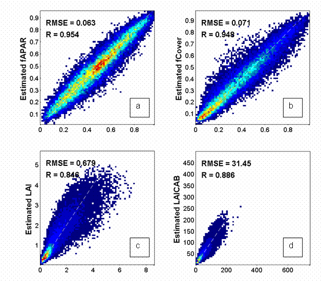
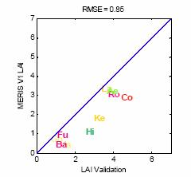

| TOA-VEG Algorithm |
|
The proposed algorithm called here TOA_VEG is based on the training of neural networks over a data base simulated using radiative transfer models (RTM, Figure 1). The SAIL, PROSPECT and SMAC are coupled and used to simulate the reflectance in the 13 MERIS bands considered (412 nm, 442 nm, 490 nm, 510 nm, 560 nm, 620 nm, 665 nm, 681.25 nm, 708.75 nm, 753.75 nm, 778.75 nm, 865 nm, 885 nm). The oxygen and water absorption bands have not been used because they would convey significant uncertainties associated while providing only marginal information on the surface. The background optical properties are simulated using a collection of soil, water and snow typical reflectance spectra. A brightness factor is used to provide additional flexibility of the background reflectance. Finally, to account for the medium resolution of MERIS observations, mixed pixels are simulated with variable fractions of pure background and pure vegetation.
The simulation of the top of atmosphere reflectance in the 13 MERIS bands requires 15 input variables. They were drawn randomly according to an experimental plan aiming at getting a more evenly populated space of canopy realization. To provide more robust performances of the network, the distributions of each input variable was close to the actual distributions and, when possible. Realistic co-distributions were also used. This was achieved by considering a representative distribution of targets over the earth surface that constrains the observation geometry, as well as possible vegetation amount. A total number of 73 728 cases were simulated. Half of this data set was used for training, one quarter to evaluate hyper-specialization, and the last quarter to quantify the theoretical performances.
Back-propagation neural networks were trained for each variable considered. The architecture was optimized, resulting in 2 hidden layers of tangent-sigmoid neurones corresponding to a total around 300 coefficients to adjust, and providing a good ratio (50-100) with the size of the training data base.

Figure 1: Overview of the TOA-VEG algorithm
The theoretical performances were evaluated over the test simulated data set (Figure 2 ). It allowed providing estimates of uncertainties. They are close to 0.06 (absolute value) for fAPAR and fCover, and close to 25% (relative value) for LAI and LAI.Cab that shows some loss of sensitivity for the larger values of LAI and LAI.Cab due to saturation effects.

Figure 2: Density plots of a) fAPAR, b) fCover, c) LAI,
d) LAI.Cab, ANN estimates vs. the true values from the test database.
The corresponding values of the Root Mean Square Errors (RMSE) and determination coefficients (R) are provided.
Various validation exercises have been performed on both full and reduced resolution images. In particular, the algorithm has been validated over ground measurements (VALERI, MODLAND, BigFoot and CCRS data) and inter-compared over 26 sites during the whole year 2003 with other products (MODIS, CYCLOPES, ECOCLIMAP). The main results are the following:

Figure 3: Validation on TOA_VEG LAI product over VALERI ground measurements.
The conclusions of this validation exercise is that the TOA-VEG products show quite good results but that LAI over 2.0 might be underestimated by the processor. For more information, please refer to the validation document.